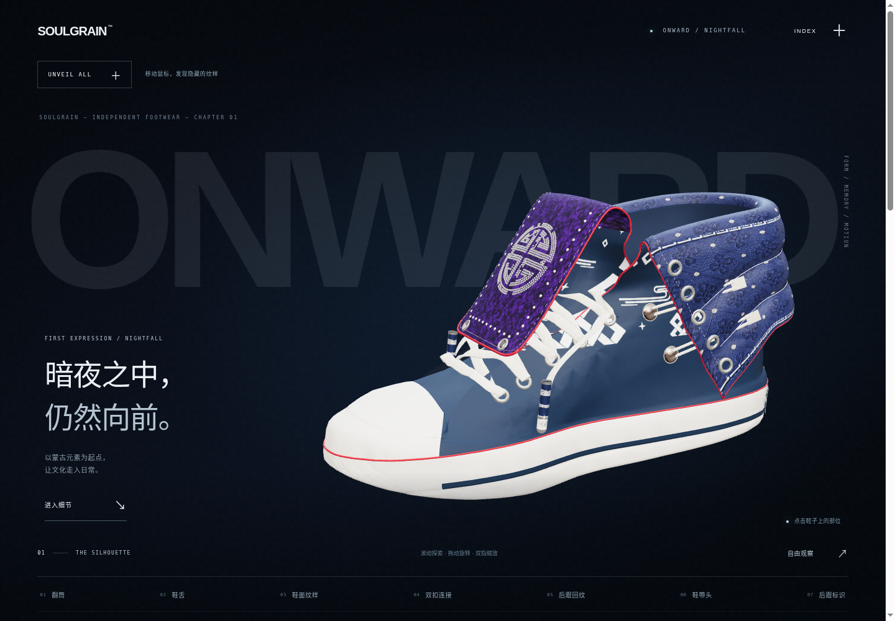
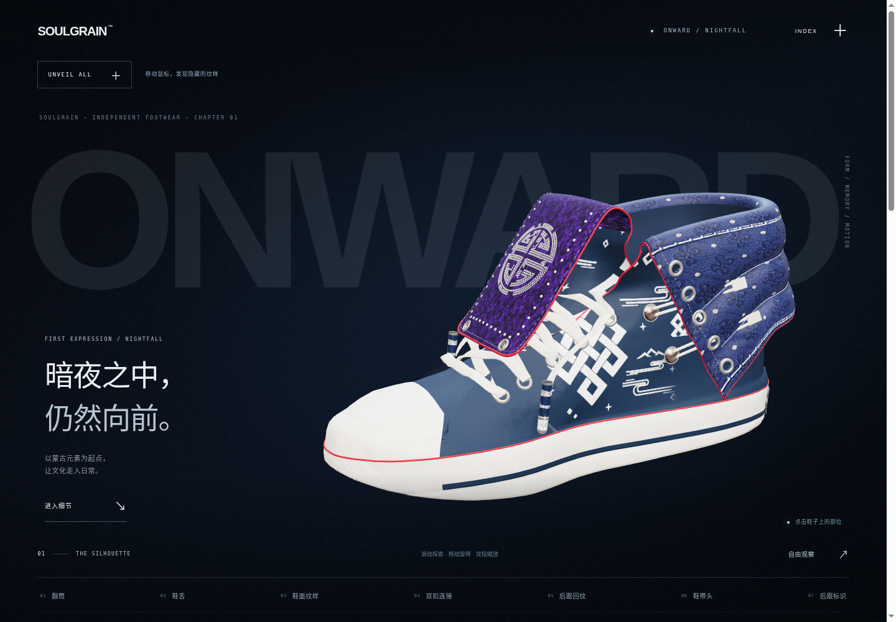
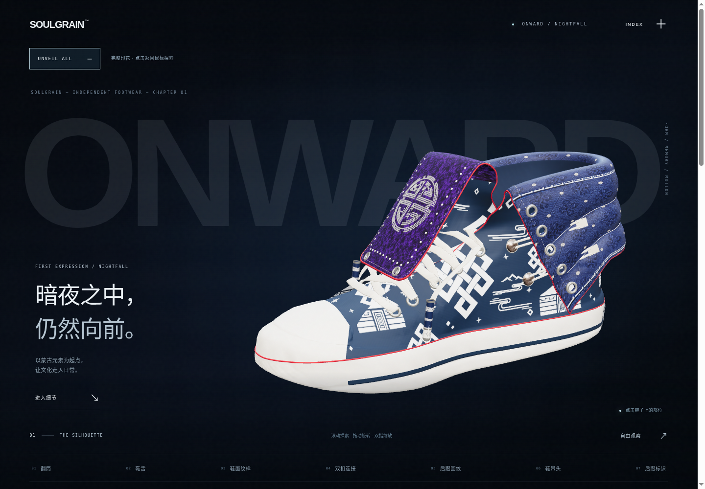
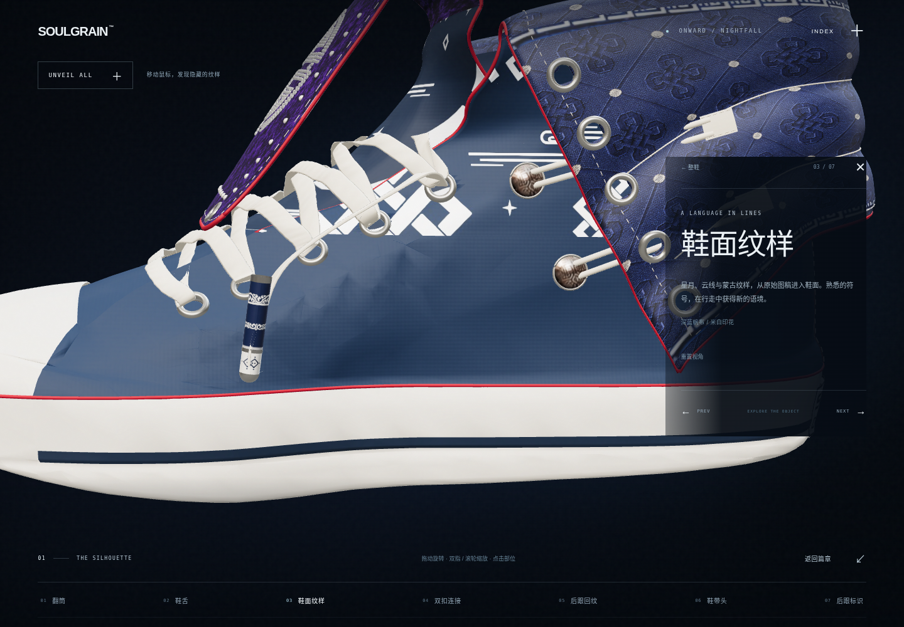
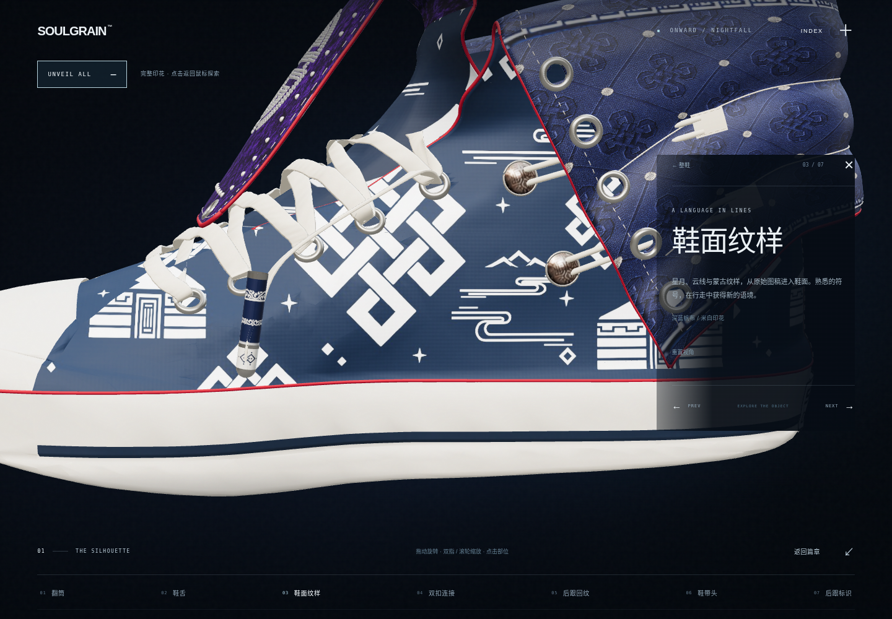
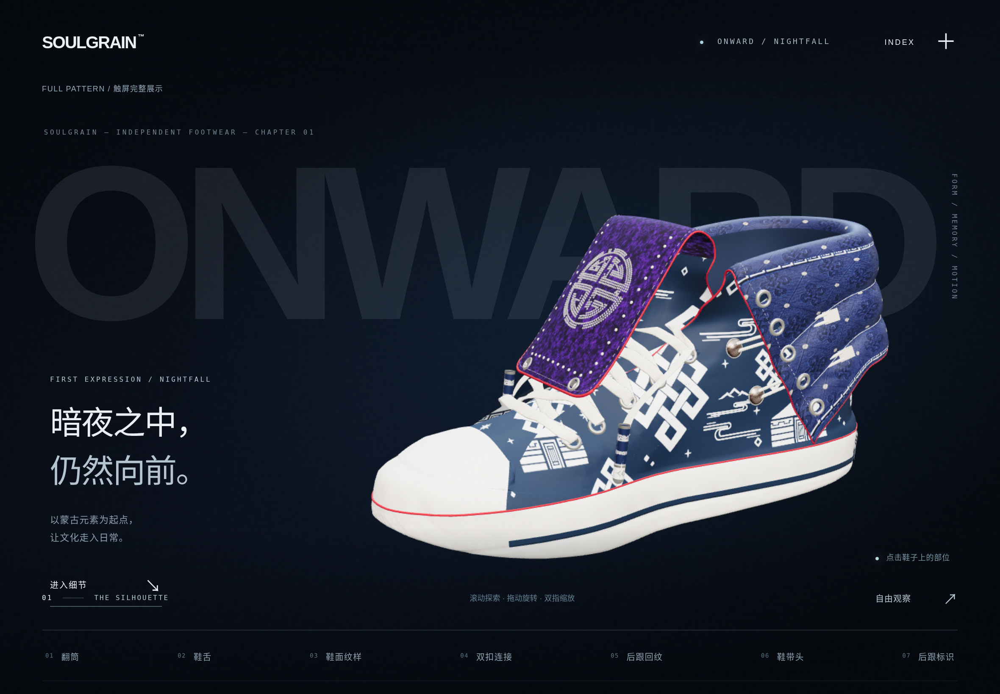
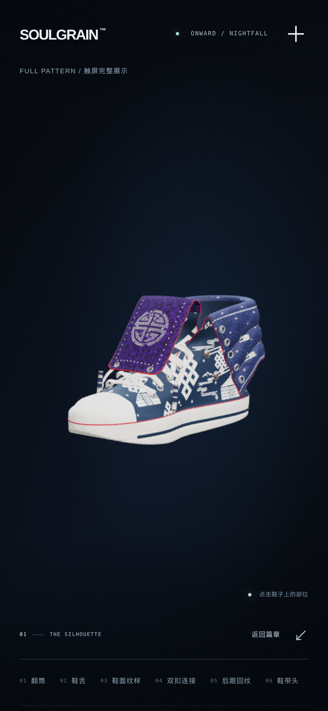

藏在夜色里。
由你逐一发现。
藏蓝帆布保留原有光照、布纹和轮廓。鼠标经过鞋面时，一个柔和的窗口恢复原始蒙古纹样；离开后，再归于夜色。

同一双鞋，三种观看状态。




实际输入驱动的操作过程。
视频由真实鼠标移动和按钮点击驱动同一个生产控制器，按可重复时间点记录 WebGL 帧。编码帧率不代表设备实时性能，核心网页保留真正的三维交互。
底色与印花，共用原来的布面。




触屏继续看完整产品。




工程记录与边界。
原 GLB、UV、蒙古纹样均未修改。新窗口仅在原 PBR 内混合颜色，不增加透明鞋壳或额外绘制通道。最近可见表面命中、侧面限定与深度带共同限制揭示，展开翻筒时暂停局部窗口。原 Nightfall 预览独立保留。
当前彩色资产仍是 V8 广告派生的绳扣版本。Lithos 参考地址被环境代理 CONNECT 403 阻断，未取得原站画面。实际测试环境为 Linux Chromium / SwiftShader；iPad Safari 尚未实机验证，报告不作硬件帧率承诺。